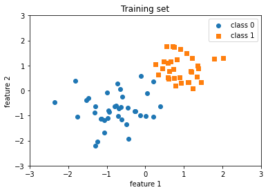
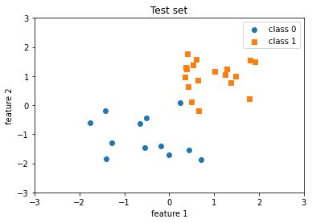
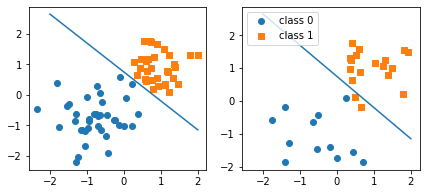

Lecture 2: Neural Networks: A Review Part 2 Code
Contents

Lecture 2: Neural Networks: A Review Part 2 Code #
#@title
from ipywidgets import widgets
out1 = widgets.Output()
with out1:
from IPython.display import YouTubeVideo
video = YouTubeVideo(id=f"OKVn7q20dEY", width=854, height=480, fs=1, rel=0)
print("Video available at https://youtube.com/watch?v=" + video.id)
display(video)
display(out1)
#@title
from IPython import display as IPyDisplay
IPyDisplay.HTML(
f"""
<div>
<a href= "https://github.com/DL4CV-NPTEL/Deep-Learning-For-Computer-Vision/blob/main/Slides/Week_4/DL4CV_Week04_Part01.pdf" target="_blank">
<img src="https://github.com/DL4CV-NPTEL/Deep-Learning-For-Computer-Vision/blob/main/Data/Slides_Logo.png?raw=1"
alt="button link to Airtable" style="width:200px"></a>
</div>""" )
Perceptron#
Imports
import numpy as np
import torch
import matplotlib.pyplot as plt
%matplotlib inline
Preparing the dataset
##########################
### DATASET
##########################
data = np.genfromtxt('https://raw.githubusercontent.com/DL4CV-NPTEL/Deep-Learning-For-Computer-Vision/main/Data/Week%204/perceptron_toydata.txt', delimiter='\t')
X, y = data[:, :2], data[:, 2]
y = y.astype(np.int_)
print('Class label counts:', np.bincount(y))
print('X.shape:', X.shape)
print('y.shape:', y.shape)
# Shuffling & train/test split
shuffle_idx = np.arange(y.shape[0])
shuffle_rng = np.random.RandomState(123)
shuffle_rng.shuffle(shuffle_idx)
X, y = X[shuffle_idx], y[shuffle_idx]
X_train, X_test = X[shuffle_idx[:70]], X[shuffle_idx[70:]]
y_train, y_test = y[shuffle_idx[:70]], y[shuffle_idx[70:]]
# Normalize (mean zero, unit variance)
mu, sigma = X_train.mean(axis=0), X_train.std(axis=0)
X_train = (X_train - mu) / sigma
X_test = (X_test - mu) / sigma
Class label counts: [50 50]
X.shape: (100, 2)
y.shape: (100,)
X_train.std(axis=0)
array([1., 1.])
plt.scatter(X_train[y_train==0, 0], X_train[y_train==0, 1], label='class 0', marker='o')
plt.scatter(X_train[y_train==1, 0], X_train[y_train==1, 1], label='class 1', marker='s')
plt.title('Training set')
plt.xlabel('feature 1')
plt.ylabel('feature 2')
plt.xlim([-3, 3])
plt.ylim([-3, 3])
plt.legend()
plt.show()

plt.scatter(X_test[y_test==0, 0], X_test[y_test==0, 1], label='class 0', marker='o')
plt.scatter(X_test[y_test==1, 0], X_test[y_test==1, 1], label='class 1', marker='s')
plt.title('Test set')
plt.xlabel('feature 1')
plt.ylabel('feature 2')
plt.xlim([-3, 3])
plt.ylim([-3, 3])
plt.legend()
plt.show()

Perceptron using Numpy#
Defining the Perceptron model
class Perceptron_numpy():
def __init__(self, num_features):
self.num_features = num_features
self.weights = np.zeros((num_features, 1), dtype=np.float32)
self.bias = np.zeros(1, dtype=np.float32)
def forward(self, x):
linear = np.dot(x, self.weights) + self.bias # comp. net input
predictions = np.where(linear > 0., 1, 0)
return predictions
def backward(self, x, y):
predictions = self.forward(x)
errors = y - predictions
return errors
def train(self, x, y, epochs):
for e in range(epochs):
for i in range(y.shape[0]):
errors = self.backward(x[i].reshape(1, self.num_features), y[i]).reshape(-1)
self.weights += (errors * x[i]).reshape(self.num_features, 1)
self.bias += errors
def evaluate(self, x, y):
predictions = self.forward(x).reshape(-1)
accuracy = np.sum(predictions == y) / y.shape[0]
return accuracy
Training the Perceptron
ppn_numpy = Perceptron_numpy(num_features=2)
ppn_numpy.train(X_train, y_train, epochs=5)
print('Model parameters:\n\n')
print(' Weights: %s\n' % ppn_numpy.weights)
print(' Bias: %s\n' % ppn_numpy.bias)
Model parameters:
Weights: [[1.2734085]
[1.3464228]]
Bias: [-1.]
Evaluating the model
train_acc = ppn_numpy.evaluate(X_train, y_train)
print('Train set accuracy: %.2f%%' % (train_acc*100))
Train set accuracy: 100.00%
test_acc = ppn_numpy.evaluate(X_test, y_test)
print('Test set accuracy: %.2f%%' % (test_acc*100))
Test set accuracy: 93.33%
##########################
### 2D Decision Boundary
##########################
w, b = ppn_numpy.weights, ppn_numpy.bias
x0_min = -2
x1_min = ( (-(w[0] * x0_min) - b[0])
/ w[1] )
x0_max = 2
x1_max = ( (-(w[0] * x0_max) - b[0])
/ w[1] )
# x0*w0 + x1*w1 + b = 0
# x1 = (-x0*w0 - b) / w1
fig, ax = plt.subplots(1, 2, sharex=True, figsize=(7, 3))
ax[0].plot([x0_min, x0_max], [x1_min, x1_max])
ax[0].scatter(X_train[y_train==0, 0], X_train[y_train==0, 1], label='class 0', marker='o')
ax[0].scatter(X_train[y_train==1, 0], X_train[y_train==1, 1], label='class 1', marker='s')
ax[1].plot([x0_min, x0_max], [x1_min, x1_max])
ax[1].scatter(X_test[y_test==0, 0], X_test[y_test==0, 1], label='class 0', marker='o')
ax[1].scatter(X_test[y_test==1, 0], X_test[y_test==1, 1], label='class 1', marker='s')
ax[1].legend(loc='upper left')
plt.show()

Perceptron using PyTorch#
Defining the Perceptron model
device = "cpu"
class Perceptron_torch():
def __init__(self, num_features):
self.num_features = num_features
self.weights = torch.zeros(num_features, 1,
dtype=torch.float32, device=device)
self.bias = torch.zeros(1, dtype=torch.float32, device=device)
# placeholder vectors so they don't
# need to be recreated each time
self.ones = torch.ones(1)
self.zeros = torch.zeros(1)
def forward(self, x):
linear = torch.mm(x, self.weights) + self.bias
predictions = torch.where(linear > 0., self.ones, self.zeros)
return predictions
def backward(self, x, y):
predictions = self.forward(x)
errors = y - predictions
return errors
def train(self, x, y, epochs):
for e in range(epochs):
for i in range(y.shape[0]):
# use view because backward expects a matrix (i.e., 2D tensor)
errors = self.backward(x[i].reshape(1, self.num_features), y[i]).reshape(-1)
self.weights += (errors * x[i]).reshape(self.num_features, 1)
self.bias += errors
def evaluate(self, x, y):
predictions = self.forward(x).reshape(-1)
accuracy = torch.sum(predictions == y).float() / y.shape[0]
return accuracy
Training the Perceptron
ppn_torch = Perceptron_torch(num_features=2)
X_train_tensor = torch.tensor(X_train, dtype=torch.float32, device=device)
y_train_tensor = torch.tensor(y_train, dtype=torch.float32, device=device)
ppn_torch.train(X_train_tensor, y_train_tensor, epochs=5)
print('Model parameters:')
print(' Weights: %s' % ppn_torch.weights)
print(' Bias: %s' % ppn_torch.bias)
Model parameters:
Weights: tensor([[1.2734],
[1.3464]])
Bias: tensor([-1.])
Evaluating the model
X_test_tensor = torch.tensor(X_test, dtype=torch.float32, device=device)
y_test_tensor = torch.tensor(y_test, dtype=torch.float32, device=device)
test_acc = ppn_torch.evaluate(X_test_tensor, y_test_tensor)
print('Test set accuracy: %.2f%%' % (test_acc*100))
Test set accuracy: 93.33%
##########################
### 2D Decision Boundary
##########################
w, b = ppn_torch.weights, ppn_torch.bias
x0_min = -2
x1_min = ( (-(w[0] * x0_min) - b[0])
/ w[1] )
x0_max = 2
x1_max = ( (-(w[0] * x0_max) - b[0])
/ w[1] )
fig, ax = plt.subplots(1, 2, sharex=True, figsize=(7, 3))
ax[0].plot([x0_min, x0_max], [x1_min, x1_max])
ax[1].plot([x0_min, x0_max], [x1_min, x1_max])
ax[0].scatter(X_train[y_train==0, 0], X_train[y_train==0, 1], label='class 0', marker='o')
ax[0].scatter(X_train[y_train==1, 0], X_train[y_train==1, 1], label='class 1', marker='s')
ax[1].scatter(X_test[y_test==0, 0], X_test[y_test==0, 1], label='class 0', marker='o')
ax[1].scatter(X_test[y_test==1, 0], X_test[y_test==1, 1], label='class 1', marker='s')
ax[1].legend(loc='upper left')
plt.show()
/usr/local/lib/python3.7/dist-packages/numpy/core/shape_base.py:65: FutureWarning: The input object of type 'Tensor' is an array-like implementing one of the corresponding protocols (`__array__`, `__array_interface__` or `__array_struct__`); but not a sequence (or 0-D). In the future, this object will be coerced as if it was first converted using `np.array(obj)`. To retain the old behaviour, you have to either modify the type 'Tensor', or assign to an empty array created with `np.empty(correct_shape, dtype=object)`.
ary = asanyarray(ary)
/usr/local/lib/python3.7/dist-packages/numpy/core/shape_base.py:65: VisibleDeprecationWarning: Creating an ndarray from ragged nested sequences (which is a list-or-tuple of lists-or-tuples-or ndarrays with different lengths or shapes) is deprecated. If you meant to do this, you must specify 'dtype=object' when creating the ndarray.
ary = asanyarray(ary)
Acknowledgements
Code adopted from the excellent lectures of Sebastian Raschka